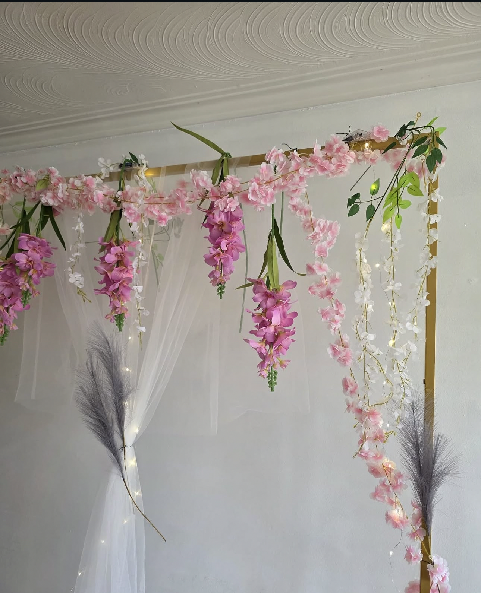
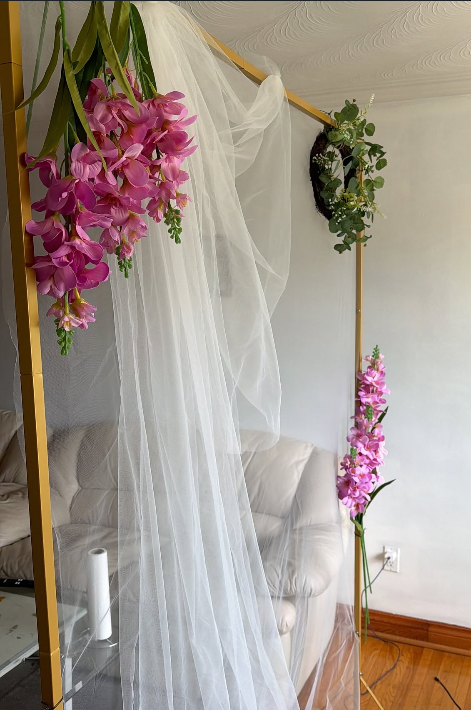
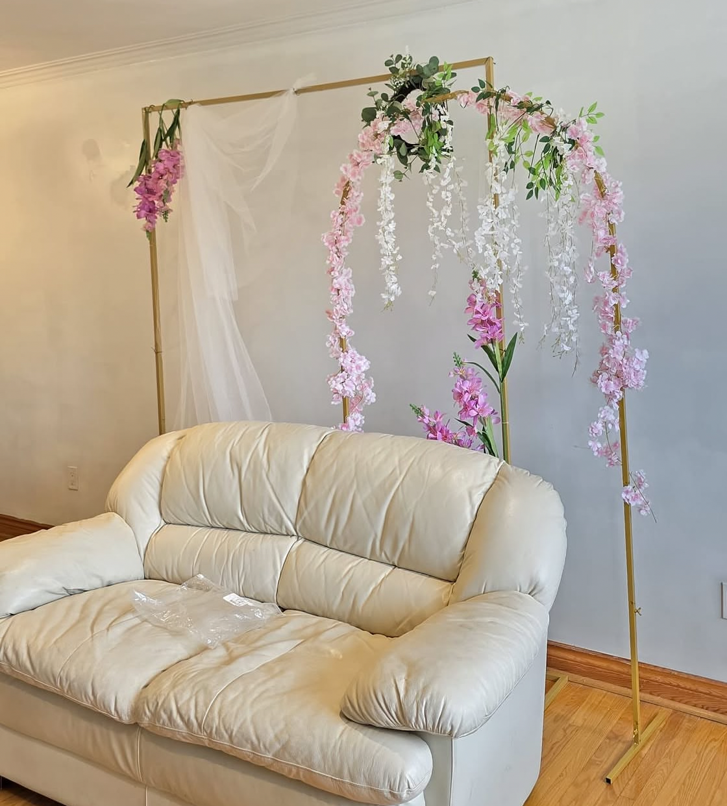
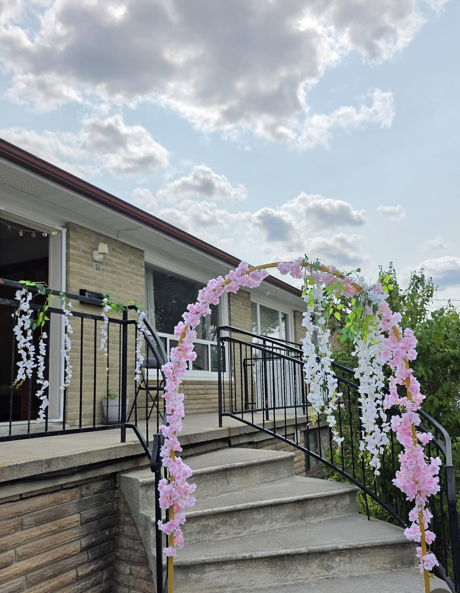

Our Services
Our Services
Beautiful décor for birthdays, weddings, showers and every special celebration.
Custom Theme Decor

Beautiful decoration and event setups for your special occasions.
Creative birthday decoration and theme setups.
Elegant and joyful baby shower decorations.
Romantic setups for meaningful milestones.
Beautiful car decoration for your special day.
Warm and memorable welcome baby setups.
Festive decorations for your new home.
Personalized decoration based on your theme and ideas.
Complete decoration for homes and event venues.
Choose the place that fits your celebration.
Real decoration setups by Mehar Events for indoor celebrations, homes and outdoor spaces.




Tell us about your event and let us create something special.
Joban Lahoria
📞 4378081814Available for small events and decoration requirements.